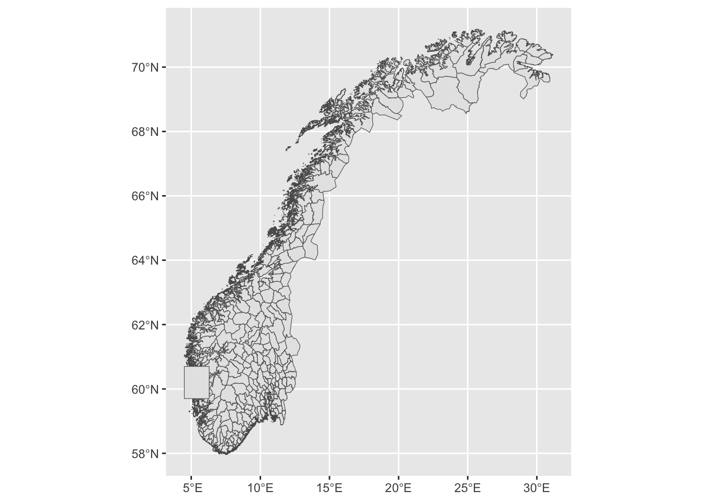

library(tidyverse)
library(here)11 Making Maps
The study of spatial data is important in many empirical problems. This is data that contains information about the spatial distribution of various phenomena. If we use the spread of disease as an example, this would mean that we not only know who is sick (the cross-section), when they are sick (time series, or temporal variation), but also where people are sick, which is the spatial dimension. There are fancy statistical models for this kind of data (in the same way as there are fancy statistical models for time series), but we will limit ourselves to the descriptive analysis of spatial data, which basically means that we will make maps.
On one hand, making maps adds a level of complexity to our coding skills because we are basically trying to plot information that is distributed on a globe onto a flat surface giving rise to different projections and coordinate systems. On the other hand we will still be able to use well known techniques of data wrangling and plotting that we have learned earlier in the course, because we will use a package (sf) that plays well with the principles of tidy data that we use in the tidyverse as well as the syntax of ggplot2.
11.1 Drawing geographical features on a map
First of all, we load the basic packages that we need; the tidyverse for everything tidy (including ggplot2) and the here-package for easy project management (a finished script containing the code for this lesson as well as most of the data and material is available in this git repository).
In the simplest of terms, making a map is not much more than making a two-dimensional plot; we can plot x against y, longitude against latitude. Let us first define two points in a data frame and plot them in a simple figure:
points <- tibble(x = c(5.209806, 5.205498),
y = c(59.92981, 59.92997))
map <-
points %>%
ggplot(aes(x, y)) +
geom_point(size = 4, colour = "red", alpha = .5)
mapThis is a map, I guess we can say, as these two points represent two geographical points in the world, defined by the lat-lon coordinates (degrees north of the equator and degrees east of the zero-meridian). We can also draw a line between them, which is the path we would take when travelling between these points:
map + geom_line()But of course, in the real world (at least in this part of the world), no road just goes straight from one point to the next. In order to represent the actual road that exists out there, we can for instance use a new series of points. In order to capture the road realistically, we probably need quite a few of them, so we store them in a file and read the data in the usual way:
road <- here("data", "road.csv") %>% read_csv(show_col_types = F)Let us replace the straight line with the new representation of the road, that corresponds to the physical terrain. We start by plotting the points so that we can appreciate the resolution of the information that we have.
map + geom_point(aes(x, y), data = road, size = .7, alpha = .2)Or, by rather drawing a line:
map + geom_line(aes(x, y), data = road, alpha = .6)This is just a very small tile of the earth. In fact, we can calculate the geographical distance between these two points if we have the geoshpere package installed, and we see that it is just around 240 meters:
geosphere::distm(points[1,], points[2,]) [,1]
[1,] 241.5535The two locations and the road between them are located on a small island, and we want to draw the island on the map as well:
island <-
here("data", "island.csv") %>%
read_csv(col_names = c('x', 'y'),
col_select = c(1, 2),
show_col_types = F)
island_map <-
map +
geom_point(aes(x, y), data = road, size = .5, alpha = .1) +
geom_point(aes(x, y), data = island, size = .5, alpha = .1)
island_mapOkay, this can pass as a nice little map over an island with two points of interest and a road between these points. But still, this is inconvenient for a number of different reasons:
- According to recent studies of the earth, the longitudes and latitudes does not appear to define a regular Euclidean coordinate system. (The earth is round; the geographical distance you need to travel to go one degree east depends on your latitude). This has consequences for how we draw the map on a flat surface and gives rise to the concept of map projections (https://en.wikipedia.org/wiki/Map_projection). When treating the geographical coordinates simply as x and y as above we lose any concept of this.
- Why did we not use
geom_line()to draw the island above? Try it, it looks very strange. This is because the points in the file that we supplied do not have the point in the correct order travelling around the circumference. But R orggplot2does not know this, there is no understanding in the system now that the points define an island – the line goes from one point to the next. - Of course, we do not want to just draw maps, we probably want to associate some data to the geographical shapes that we want to visualize in some way. Say we have several islands like the one above with information about the sheep population on each island, and we want to color them according to this number. Not obvious if we store the island coastlines as plain x- and y-coordinates.
- Above, we are explicitly dealing with the spatial resolution of the coastline; we have more than 11,000 entries in a file to describe this small island. In a map of the whole country, this is way too much because we would need several gigabytes (terabytes?) to describe everything at this resolution. Islands of this size might not be needed at all. Do we want to deal with these considerations manually? No.
- Map data from official sources are not provided in the format of csv-files, but rather in specialized formats for geographical information. We need to be able to work with such formats.
- And we can just forget about advanced spatial joining (join houses defined by lat-lon-coordinates with islands or municipalities), spatial filtering (only keep houses that have coordinates within the boundary of an island or a municipality), or by creating intersections or unions between several geographical areas.
Luckily, there is a way to easily and elegantly deal with all of these issues. Enter the sf-package, co-authored by Professor Emeritus at NHH Roger Bivand:
library(sf)This package will allow us to work with geographical data within the framework of the tidyverse for data wrangling and ggplot2 for visualizations.
Let us start by converting the coordinates of our two houses to a data frame with a “geometry” column, describing their locations. Before we do that, we decide once and for all on a coordinate reference system that we will use on the remainder of our session. I find it a good practice to explicitly define all objects with a reference system, both the objects that we create, and also the objects that we will import later. The following choice is fairly standard and the system used for GPS. Read more details on this in Section 17.3.2 in Modern Data Science for R (but this is very complicated to fully understand, not needed for our purposes). Let us store our choice in a variable so that we can apply it to various geographical objects later on:
crs <- 4326We can convert the data frame containing the two points to a geometric object using the following function. We supply the points as the first argument, we specify which columns containing the latitudes and longitudes, respectively, using the coords argument, and then we specify the coordinate reference system using the crs argument, where we simply supply the variable that we defined above.
points_sf <- st_as_sf(points,
coords = c("x", "y"),
crs = crs)This results in a data frame with one column called geometry, which has the type POINT. When we print out the object, we also see more information about the object printed at the top. WGS 84 is a general designation of the coordinate system of which 4326 is a special case.
points_sfSimple feature collection with 2 features and 0 fields
Geometry type: POINT
Dimension: XY
Bounding box: xmin: 5.205498 ymin: 59.92981 xmax: 5.209806 ymax: 59.92997
Geodetic CRS: WGS 84
# A tibble: 2 × 1
geometry
* <POINT [°]>
1 (5.209806 59.92981)
2 (5.205498 59.92997)The sf packages comes with a special ggplot2 function that is incredibly useful:
map_sf <- points_sf %>% ggplot() + geom_sf(aes(geometry = geometry))
map_sfThat was very basic indeed! We will fix this to become a better map a little bit later. For now, let us convert the road to a geometry as well:
road_sf <-
# Convert to points
st_as_sf(road,
coords = c("x", "y"),
crs = crs) %>%
# Merge into a single geometry (one road is one row in the data frame)
summarise(do_union = FALSE) %>%
# Convert to a line
st_cast("LINESTRING") Here is the object that we now created. Note that this conversion leads to a data frame with one column (the geometry column) and only one row. This single cell contains the whole road, and we can imagine (and we will see later) that this format will be very useful. For instance, we could have several roads collected efficiently in this manner – one road per row of data.
road_sfSimple feature collection with 1 feature and 0 fields
Geometry type: LINESTRING
Dimension: XY
Bounding box: xmin: 5.205498 ymin: 59.92958 xmax: 5.209817 ymax: 59.93084
Geodetic CRS: WGS 84
# A tibble: 1 × 1
geometry
<LINESTRING [°]>
1 (5.209806 59.92981, 5.209812 59.92981, 5.209817 59.92982, 5.209816 59.92982, …We add the road to the plot:
map_sf + geom_sf(aes(geometry = geometry), data = road_sf)We press on, and do the same thing with the contour of the island, which we convert to a POLYGON, that is, a closed shape. We draw the map immediately after:
island_sf <-
# Convert to points
st_as_sf(island,
coords = c("x", "y"),
crs = crs) %>%
# Merge into a single geometry (one road is one row in the data frame)
summarise(do_union = FALSE) %>%
# Convert to a polygon
st_cast("POLYGON")
map_sf +
geom_sf(aes(geometry = geometry), data = road_sf) +
geom_sf(aes(geometry = geometry), fill = "#00000020", data = island_sf)Very nice! Let us wrap up this initial case by making some finishing touches to the plot:
island_sf %>%
ggplot(aes(geometry = geometry)) +
geom_sf(fill = "gray") +
geom_sf(aes(geometry = geometry), data = road_sf, linetype = "dotted") +
geom_sf(aes(geometry = geometry), data = points_sf, shape = 3, size = 2) +
theme_minimal() +
theme(axis.text = element_text(color = "gray"))11.2 Plotting geographical data
We then move on to the next example. This time we do not only want to draw the map, but we want to use the map to visualize some geographical data. Also, we increase the scale of our problem from a small island on the Norwegian Coast to the entire world. The following packages contain a lot of data on the various countries of the world (as always, you need to install the packages before running the library() command):
library(rnaturalearth)
library(rnaturalearthdata)We then extract a data frame which contains a geometry column (as well as many other columns containing other kind of information). We also print out a list of the columns and note that there is a geometry-column containing the information about the shape of each country of the world:
world <- ne_countries(scale = "medium", returnclass = "sf")
colnames(world) [1] "featurecla" "scalerank" "labelrank" "sovereignt" "sov_a3"
[6] "adm0_dif" "level" "type" "tlc" "admin"
[11] "adm0_a3" "geou_dif" "geounit" "gu_a3" "su_dif"
[16] "subunit" "su_a3" "brk_diff" "name" "name_long"
[21] "brk_a3" "brk_name" "brk_group" "abbrev" "postal"
[26] "formal_en" "formal_fr" "name_ciawf" "note_adm0" "note_brk"
[31] "name_sort" "name_alt" "mapcolor7" "mapcolor8" "mapcolor9"
[36] "mapcolor13" "pop_est" "pop_rank" "pop_year" "gdp_md"
[41] "gdp_year" "economy" "income_grp" "fips_10" "iso_a2"
[46] "iso_a2_eh" "iso_a3" "iso_a3_eh" "iso_n3" "iso_n3_eh"
[51] "un_a3" "wb_a2" "wb_a3" "woe_id" "woe_id_eh"
[56] "woe_note" "adm0_iso" "adm0_diff" "adm0_tlc" "adm0_a3_us"
[61] "adm0_a3_fr" "adm0_a3_ru" "adm0_a3_es" "adm0_a3_cn" "adm0_a3_tw"
[66] "adm0_a3_in" "adm0_a3_np" "adm0_a3_pk" "adm0_a3_de" "adm0_a3_gb"
[71] "adm0_a3_br" "adm0_a3_il" "adm0_a3_ps" "adm0_a3_sa" "adm0_a3_eg"
[76] "adm0_a3_ma" "adm0_a3_pt" "adm0_a3_ar" "adm0_a3_jp" "adm0_a3_ko"
[81] "adm0_a3_vn" "adm0_a3_tr" "adm0_a3_id" "adm0_a3_pl" "adm0_a3_gr"
[86] "adm0_a3_it" "adm0_a3_nl" "adm0_a3_se" "adm0_a3_bd" "adm0_a3_ua"
[91] "adm0_a3_un" "adm0_a3_wb" "continent" "region_un" "subregion"
[96] "region_wb" "name_len" "long_len" "abbrev_len" "tiny"
[101] "homepart" "min_zoom" "min_label" "max_label" "label_x"
[106] "label_y" "ne_id" "wikidataid" "name_ar" "name_bn"
[111] "name_de" "name_en" "name_es" "name_fa" "name_fr"
[116] "name_el" "name_he" "name_hi" "name_hu" "name_id"
[121] "name_it" "name_ja" "name_ko" "name_nl" "name_pl"
[126] "name_pt" "name_ru" "name_sv" "name_tr" "name_uk"
[131] "name_ur" "name_vi" "name_zh" "name_zht" "fclass_iso"
[136] "tlc_diff" "fclass_tlc" "fclass_us" "fclass_fr" "fclass_ru"
[141] "fclass_es" "fclass_cn" "fclass_tw" "fclass_in" "fclass_np"
[146] "fclass_pk" "fclass_de" "fclass_gb" "fclass_br" "fclass_il"
[151] "fclass_ps" "fclass_sa" "fclass_eg" "fclass_ma" "fclass_pt"
[156] "fclass_ar" "fclass_jp" "fclass_ko" "fclass_vn" "fclass_tr"
[161] "fclass_id" "fclass_pl" "fclass_gr" "fclass_it" "fclass_nl"
[166] "fclass_se" "fclass_bd" "fclass_ua" "geometry" The geometry column has the class MULTIPOLYGON, as we see below, which means that the contour of each country consists of potentially several polygons, which makes perfect sense of course, since each country may consist of several disconnected areas (islands, exclaves, overseas territories, etc.). But still, each country has one row in the data set:
world %>% select(geometry) %>% head()Simple feature collection with 6 features and 0 fields
Geometry type: MULTIPOLYGON
Dimension: XY
Bounding box: xmin: -73.36621 ymin: -22.40205 xmax: 109.4449 ymax: 41.9062
Geodetic CRS: WGS 84
geometry
1 MULTIPOLYGON (((31.28789 -2...
2 MULTIPOLYGON (((30.39609 -1...
3 MULTIPOLYGON (((53.08564 16...
4 MULTIPOLYGON (((104.064 10....
5 MULTIPOLYGON (((-60.82119 9...
6 MULTIPOLYGON (((12.43916 41...We can draw a basic world map as we did above:
world %>%
ggplot(aes(geometry = geometry)) +
geom_sf()
The nice thing with this structure is of course that we can apply our data wrangling skills to the data frame in the usual way. For instance, if we want to make a map of Europe, we just filter the data frame based on the region_un column that we just happen to have in this case:
world %>%
filter(region_un == "Europe") %>%
ggplot(aes(geometry = geometry)) +
geom_sf()As with most plots, we need to work on it in order to get what we want. In this case it seems that “Europe” means whatever territory is controlled by European countries as well as the whole of Russia. For a normal x-y-plot this would be easy to fix using the xlim() and ylim() functions. This is not so straightforward now, given that it is not perfectly obvious how we should supply the limits. Indeed, when reading the documentation for the geom_sf() function we see that specifying limits via xlim() and ylim() is “strongly discouraged”.
There are two options; either cropping the map data before we plot using st_crop() as part of a pipe-sequence, or cropping the image after we plot using coord_sf() as part of a ggplot layering sequence (i.e. with a “+”). Here is the latter option:
world %>%
ggplot(aes(geometry = geometry)) +
geom_sf() +
coord_sf(xlim = c(-20, 45), ylim = c(35, 73))For completeness, we can show the first option as well, which can be particularly useful when the data frame is very large, and this is not at all uncommon when they contain mapping geometries:
world %>%
st_crop(xmin = -20, xmax = 45, ymin = 35, ymax = 73) %>%
ggplot(aes(geometry = geometry)) +
geom_sf()Looks good. By reading through this blog post we see that we can make some further refinements to the map, including making the explicit transformation to our chosen map projection.
world %>%
st_transform(crs = crs) %>%
ggplot(aes(geometry = geometry)) +
geom_sf() +
coord_sf(xlim = c(-20, 45), ylim = c(35, 73)) +
theme_minimal() +
theme(axis.text = element_text(color = "gray")) But the point of all this was not no just make another map! We want to visualize data. In fact, there is some numerical data present in the world data that we have created above, but it is poorly documented (at least so poorly that I was not able to figure out the units and where the data comes from). No worries, there are plenty of sources containing data on the countries of the world. One very convenient is the gapminder package (see gapminder.org for some background, this is the data that the late Hans Rosling use for his legendary visualizations on world development):
library(gapminder)
head(gapminder)# A tibble: 6 × 6
country continent year lifeExp pop gdpPercap
<fct> <fct> <int> <dbl> <int> <dbl>
1 Afghanistan Asia 1952 28.8 8425333 779.
2 Afghanistan Asia 1957 30.3 9240934 821.
3 Afghanistan Asia 1962 32.0 10267083 853.
4 Afghanistan Asia 1967 34.0 11537966 836.
5 Afghanistan Asia 1972 36.1 13079460 740.
6 Afghanistan Asia 1977 38.4 14880372 786.As we see, there is one row per country-year. Next, we have a joining problem because the map data and the numerical data lives in two different data frames. Let us try to do a left_join() into the data frame containing the mapping data so that we will be able to draw the entire world map regardless of whether we have data there or not:
gdp <-
world %>%
# The name of the country name column must match
mutate(country = admin) %>%
# We try to join, keeping only the countries that we have in the gapminder data
left_join(gapminder, by = "country") %>%
# We only use the latest year of data
filter(year == 2007) %>%
# Drop the columns that we do not need, let us plot the GDP per capita for 2007
select(country, gdpPercap, geometry)Let us see how this went by printing out all the countries in the gapminder data that did not find a match in the world data:
no_match <-
anti_join(gapminder, gdp, by = "country") %>%
select(country) %>%
distinct()
no_match# A tibble: 16 × 1
country
<fct>
1 Congo, Dem. Rep.
2 Congo, Rep.
3 Cote d'Ivoire
4 Czech Republic
5 Hong Kong, China
6 Korea, Dem. Rep.
7 Korea, Rep.
8 Reunion
9 Sao Tome and Principe
10 Serbia
11 Slovak Republic
12 Swaziland
13 Tanzania
14 United States
15 West Bank and Gaza
16 Yemen, Rep. There are several countries that do not match and this happens because there are various ways to spell these country names. Missing countries the other way around is not a problem (if we do not have the GDP data we do not have it), because the country will show up in the map regardless (because is is still contained in the world data that contains all the countries of the world). But we really want to plot the GDP data that we do have by matching all the data points with an entry in the mapping data frame.
There are several ways to do this. One way is of course to do it manually, to go into the gapminder data and to change “United States” to “United States of America” and so forth for all the countries without a match. But this problem is quite common and there are automatic ways to do it. You would probably get some part of the way by fuzzy (partial) matching (see the fuzzyjoin package), but joining by country name is so common that we can go via a third database containing all possible spellings of the countries of the world.
One such database is contained in the countries package (again, you need to install this the first time you try to use it), which also contains a very convenient function auto_merge() that tries to find the columns containing information about the country and join accordingly. We do not even have to make the column names match. Look here; where we throw out the years that we do not want in the same operation:
gdp2 <-
countries::auto_merge(gapminder %>% filter(year == 2007), world) %>%
select(name, gdpPercap, geometry)Identifying columns to merge
Data type for variable country differ across tables - converting to character
Converting country names
The following columns are being merged:
======= =======
\ country
======= =======
Table 1 country
Table 2 admin
======= =======
Performing merge: 1/1
Merge complete
(Set merging_info to TRUE to save merging details)The flip side of doing the merge this way is that we do not have much control of how this went because we did not explicitly say which columns contain the country names in the two data frames. Let us count the none-NA values in the 2007 gapminder data and compare:
gapminder %>%
filter(year == 2007) %>%
select(gdpPercap) %>%
drop_na() %>%
nrow[1] 142gdp2 %>%
select(gdpPercap) %>%
drop_na() %>%
nrow[1] 142It does look like all the GDP data was kept at least. We are now ready to make a map, which is now super simple using the sf package in combination with the usual way of adding information to a ggplot: We take the world map, and simply add the GDP variable to the fill aesthetic:
gdp2 %>%
ggplot(aes(geometry = geometry)) +
geom_sf(aes(fill = gdpPercap))This looks pretty good, but let us also do the usual work of finishing the plot to make it presentable. I want to change the color scale and the color used to display countries without GDP data. We will add a title and work on the legend as well for good measure:
gdp2 %>%
ggplot(aes(geometry = geometry)) +
geom_sf(aes(fill = gdpPercap/1000)) + # Divide by 1000 for easier unit
scale_fill_gradient(low = "white", high = "darkgreen", na.value = "lightgray") +
ggtitle("GDP per Capita ($1000)") +
theme_minimal() +
labs(fill = "") +
theme(legend.position = "bottom",
legend.key.width = unit(1, 'cm'),
axis.text.x = element_blank(),
axis.text.y = element_blank()) 11.3 Downloading and using official map data
We have so far made two important steps; we have investigated the basic format for map data the R understands via the sf package, and we have made our first visualization of geographical data by means of map data that is contained in a few R-packages. Our next, and for now last, step will be to work with map data from official sources. Indeed, unless we work with a very common scale (like countries of the world or states in the US), we can usually not expect to find the necessary geographical information in an R package. Instead, we will rather have to find that data somewhere else, but luckily this is generally available from the relevant official sources. We will here work with some local Norwegian data.
In the exact moment of writing this, Norway consists of 15 fylker (counties) and they are again divided into a total of 357 kommuner (municipalities). There is a lot of official statistics that is available for each of these units and we will proceed by plotting some of that in a map. For that we need the basic mapping data, which we can download from GeoNorge, which is the official provider of all kinds of geographical information about Norway.
This particular data is too big to provide as a download via GitHub, so you need to download the data yourself. Navigate to this web-page: Norske fylker og kommuner illustrasjonsdata 2024 (klippet etter kyst), which contains the borders of the Norwegian counties and municipalities. This is the version where the borders are cut along the coastline which is the best choice for making maps.
In order to download the data you can follow this recipe:
- Click on “Last ned”.
- Click on the down-arrow next to “Meny” and then “Til nedlastning”
- Make the following selections:
- Geografisk område: Hele landet (The only choice)
- Projeksjon: EUREF89 (does not matter really, because we will change this to our
crswhen we load the data into R) - Format: GeoJSON
- Velg brukergruppe: Utdanning og forskning
- Velg formål: Forskning
- Then click “Last ned”
This results in a zip-file containing two .geojson-files, one containing the counties and another containing the municipalities. We will only use the latter in this lesson (Kommuner.geojson) but feel free to retain the other one as well if you want to experiment with that on your own. The code below assumes that you have put these two files into the folder /data/municipalities/, placed in your project root folder (the folder that is printed out if you run here() in the R console).
Files that we download like this may contain more than one “Layer” of information. For example, if you use another file format or if you download similar files for other countries, different political or administrative levels may be contained in the same file. It is a good habit to always check what layers the file contains by running, the following line, where we pass the file name (as constructed by the here-package) to the function st_layers():
st_layers(here("data", "municipalities", "Kommuner.geojson"))Driver: GeoJSON
Available layers:
layer_name geometry_type features fields crs_name
1 Kommuner Multi Polygon 365 3 ETRS89 / UTM zone 33NIn this case we see that the file only contains one layer, and furthermore that this layer describes Multi Polygons. This makes sense because each municipality may consist of several polygons that are not connected (islands, “exclaves”, different parts separated by fjords, etc). Without actually loading the data we also see that it contains 365 features which in this particular setting means 365 rows (this is a little bit non-standard, because in the data science world we often take the word “feature” to mean “variable” which are typically organized in columns). There is one row per municipality and we also make a small mental note that this number is not in perfect accordance with the official number of municipalities per 2024 which is 357. What is the reason for this discrepancy? Another day, we might want to investigate this to find the exact reason for this. Lastly, we note that there are 3 fields in the data set, which means that there are 3 columns.
We proceed by reading the data, being explicit about which layer we want to load (the only one in this case, note that we take the name of the layer from the output of the st_layers() function above), and also set the coordinate reference system (crs) right away so that all of the maps for this lesson use the same system. The main function for reading map data is st_read(), and we pass the file name as the first argument.
# Read the data
munic <-
st_read(here("data", "municipalities", "Kommuner.geojson"),
layer = "Kommuner") %>%
st_transform(crs = crs)Reading layer `Kommuner' from data source
`/Users/hakon/work/repos/ban400/data/municipalities/Kommuner.geojson'
using driver `GeoJSON'
Simple feature collection with 365 features and 3 fields
Geometry type: MULTIPOLYGON
Dimension: XY
Bounding box: xmin: -77196.14 ymin: 6448394 xmax: 1115098 ymax: 7939983
Projected CRS: ETRS89 / UTM zone 33N# Display the first few rows of the data
municSimple feature collection with 365 features and 3 fields
Geometry type: MULTIPOLYGON
Dimension: XY
Bounding box: xmin: 4.499849 ymin: 57.95938 xmax: 31.16829 ymax: 71.18555
Geodetic CRS: WGS 84
First 10 features:
fid navn nummer geometry
1 1 Skjervøy 5542 MULTIPOLYGON (((20.71859 69...
2 2 Lier 3312 MULTIPOLYGON (((10.30566 59...
3 3 Sel 3437 MULTIPOLYGON (((9.993579 61...
4 4 Tromsø 5501 MULTIPOLYGON (((19.88964 69...
5 5 Time 1121 MULTIPOLYGON (((5.617938 58...
6 6 Deatnu 5628 MULTIPOLYGON (((26.05421 69...
7 7 Ullensvang 4618 MULTIPOLYGON (((6.525198 59...
8 8 Rendalen 3424 MULTIPOLYGON (((10.44849 61...
9 9 Målselv 5524 MULTIPOLYGON (((19.81801 68...
10 10 Horten 3901 MULTIPOLYGON (((10.47475 59...We see that the resulting data set contains the name of the municipality, an identifying number, and the geometry column. We can now make a basic map of all the municipalities in Norway:
munic %>%
ggplot(aes(geometry = geometry)) +
geom_sf()Phew! That was pretty heavy on the computer! This is not surprising given that we have upwards of 200MB of data just for the borders of the municipalities. For the sake of demonstration I suggest that we narrow down our problem to a smaller area surrounding Bergen on the western coast. This is itself an interesting problem, related to the zooming issue into Europe above. We want a smaller version of the municipality data covering just a specified area. We can do that by first constructing a square in the map covering the area we want to look at, and here we do just that in one single pipe sequence:
bergen_box <-
# First, we define just a small data frame with the coordinates of the box
tibble(lon = c(4.5, 4.5, 6.3, 6.3), lat = c(59.7, 60.7, 60.7, 59.7)) %>%
# Then we convert this to a geometry columns as we did above with the island and the road:
st_as_sf(coords = c("lon", "lat"),
crs = crs) %>%
# Merge into a single geometry
summarise(do_union = FALSE) %>%
# Convert to a polygon
st_cast("POLYGON") Let us plot the full map once again and the square on top so that we can see where it is:
munic %>%
ggplot(aes(geometry = geometry)) +
geom_sf() +
geom_sf(data = bergen_box)
Next, we do a very nice trick; We intersect these two data frames (munic and bergen_box) and create a new geographic object that only covers the area that is included in both objects:
# Make the intersection
munic_small <- st_intersection(munic, bergen_box)Warning: attribute variables are assumed to be spatially constant throughout
all geometries# Print out the first rows of the resulting data frame
munic_smallSimple feature collection with 21 features and 3 fields
Geometry type: GEOMETRY
Dimension: XY
Bounding box: xmin: 4.695385 ymin: 59.7 xmax: 6.3 ymax: 60.70301
Geodetic CRS: WGS 84
First 10 features:
fid navn nummer geometry
7 7 Ullensvang 4618 POLYGON ((6.3 60.31089, 6.2...
66 66 Stord 4614 MULTIPOLYGON (((5.358141 59...
91 91 Austevoll 4625 MULTIPOLYGON (((5.052234 59...
100 100 Etne 4611 MULTIPOLYGON (((6.3 59.9595...
117 117 Vaksdal 4628 MULTIPOLYGON (((6.07889 60....
119 119 Bjørnafjorden 4624 MULTIPOLYGON (((5.368622 60...
124 124 Voss 4621 MULTIPOLYGON (((5.902444 60...
126 126 Tysnes 4616 MULTIPOLYGON (((5.362646 59...
129 129 Sauda 1135 POLYGON ((6.3 59.7, 6.3 59....
208 208 Kvam 4622 MULTIPOLYGON (((6.3 60.5027...Two things have happened here: All the municipalities that are completely outside of the box have been taken away from the data set altogether in the smaller version, and all the municipalities that are on the border with the smaller box are clipped so that their shape in the new smaller data set only contains the part that is inside of the box. We can confirm this by making a new plot:
munic_small %>%
ggplot(aes(geometry = geometry)) +
geom_sf()Let us next load some data to plot. In the following table we have the number of votes that each political party got during the local elections that took place in 2023. This .csv is downloaded directly from Statistics Norway (You can download the file here or directly from the link by clicking on “Lagre data som”, then “Semikolonneseparert med overskrift (csv)” and finally “Lagre”). There is one line per party per municipality. We skip the first three lines that contain some additional information and also skip the headlines because we want to set those ourselves. We also filter out all the observations with zero votes:
votes <- read_delim(here("data", "votes.csv"),
delim = ";",
skip = 3,
col_names = c("municipality", "party", "votes"),
# This file contains special Norwegian characters.
# Let us be specific about the encoding of this text to ensure that
# they survive the reading operation.
# (Try without and see what you get)
locale = locale(encoding = "latin1")) %>%
filter(votes != 0)Rows: 22491 Columns: 3
── Column specification ────────────────────────────────────────────────────────
Delimiter: ";"
chr (2): municipality, party
dbl (1): votes
ℹ Use `spec()` to retrieve the full column specification for this data.
ℹ Specify the column types or set `show_col_types = FALSE` to quiet this message.We inspect the first few rows to see what we have to work with:
votes# A tibble: 2,586 × 3
municipality party votes
<chr> <chr> <dbl>
1 3101 Halden Arbeiderpartiet 3001
2 3101 Halden Fremskrittspartiet 1051
3 3101 Halden Høyre 4043
4 3101 Halden Kristelig Folkeparti 516
5 3101 Halden Miljøpartiet de Grønne 554
6 3101 Halden Rødt 821
7 3101 Halden Senterpartiet 815
8 3101 Halden Sosialistisk Venstreparti 697
9 3101 Halden Venstre 194
10 3101 Halden Pensjonistpartiet 1439
# ℹ 2,576 more rowsLet us color code the map by the party that received the largest number of votes. In order to do that, we need to find a column to join by, and we see that the data frame containing the mapping data has a column with municipality name (a bit risky to use for joining due to the possibility of having different spelling of the names) and a municipality number that should be the same across both tables. We have the same information in the voting data, but the number and the names are inconveniently contained in the same column (municipality).
We should split this column into one containing the municipality number and another containing the municipality name. We can think of a few different strategies:
- Pick out the first four characters and use that as the municipality number. But are we sure that the number is four characters for all the municipalities?
- Split the column at the Space-character. But careful! There are some municipalities that contain spaces.
- Perhaps the best strategy is to split at the first space.
We can do this using the separate() function. Looking at ?separate we see that we can supply a column, then the separating character (which is the space " " in our case), then the names of the new columns and then we finally use the critical argument extra to tell the function what to do if it encounters several instances of the separating character, which we set to merge to indicate that all the remaining splits after the first should be merged into the last column:
votes_split <-
votes %>%
separate(municipality,
sep = " ",
into = c("number", "municipality"),
extra = "merge") %>%
# Convert the municipality number to a numeric column
mutate(number = as.integer(number))Confirming that this seems to have worked:
votes_split# A tibble: 2,586 × 4
number municipality party votes
<int> <chr> <chr> <dbl>
1 3101 Halden Arbeiderpartiet 3001
2 3101 Halden Fremskrittspartiet 1051
3 3101 Halden Høyre 4043
4 3101 Halden Kristelig Folkeparti 516
5 3101 Halden Miljøpartiet de Grønne 554
6 3101 Halden Rødt 821
7 3101 Halden Senterpartiet 815
8 3101 Halden Sosialistisk Venstreparti 697
9 3101 Halden Venstre 194
10 3101 Halden Pensjonistpartiet 1439
# ℹ 2,576 more rowsHere are all the unique municipality names (not run here to save space) – looks good and I think we were smart not to rely on joining data based on these names and they contain Sami (and in some cases other languages as well) spelling in a very specific way.
unique(votes_split$municipality)Next, we join the small municipality map data with the voting data and figure out which party got the largest number of votes within each municipality:
winners <-
munic_small %>%
# Rename column so that we can join
rename("number" = nummer) %>%
left_join(votes_split, by = "number") %>%
# Quick way to find the winning party in each municipality:
# group, arrange and pick the top one
group_by(municipality) %>%
arrange(desc(votes)) %>%
slice(1)The resulting data frame looks like this, with one row per municipality containing the winning party and the number of votes:
winnersSimple feature collection with 21 features and 6 fields
Geometry type: GEOMETRY
Dimension: XY
Bounding box: xmin: 4.695385 ymin: 59.7 xmax: 6.3 ymax: 60.70301
Geodetic CRS: WGS 84
# A tibble: 21 × 7
# Groups: municipality [21]
fid navn number municipality party votes geometry
<int> <chr> <int> <chr> <chr> <dbl> <MULTIPOLYGON [°]>
1 339 Alver 4631 Alver Høyre 3010 (((5.421913 60.70301, 5.…
2 228 Askøy 4627 Askøy Høyre 3692 (((5.039113 60.49945, 5.…
3 91 Austevoll 4625 Austevoll Frem… 938 (((5.052234 59.96218, 5.…
4 328 Bergen 4601 Bergen Høyre 38798 (((5.686446 60.43576, 5.…
5 119 Bjørnafjorden 4624 Bjørnafjord… Frem… 4656 (((5.368622 60.22528, 5.…
6 275 Bømlo 4613 Bømlo Høyre 1349 (((5.1439 59.74947, 5.14…
7 100 Etne 4611 Etne Frem… 575 (((6.3 59.95954, 6.29816…
8 216 Fitjar 4615 Fitjar Høyre 487 (((5.48319 59.91968, 5.4…
9 208 Kvam 4622 Kvam Arbe… 1127 (((6.3 60.50275, 6.29314…
10 267 Kvinnherad 4617 Kvinnherad Høyre 1682 (((5.70948 60.03915, 5.7…
# ℹ 11 more rowsThen, we make a map, coloring each municipality according to the winner:
winners %>%
ggplot(aes(fill = party, geometry = geometry)) +
geom_sf()Interesting! We see that there are four different parties who won the largest share of votes in the respective municipalities. The color code is a bit off, though, because there is a largely accepted (rough) color code for the Norwegian political parties that we have to map manually. See here for a full list of colors recognized by R.
We take this opportunity to finish of the plot as well:
winners %>%
ggplot(aes(fill = party, geometry = geometry)) +
geom_sf() +
scale_fill_manual(values = c("Høyre" = "lightblue3",
"Fremskrittspartiet" = "royalblue4",
"Arbeiderpartiet" = "coral",
"Senterpartiet" = "darkolivegreen4")) +
labs(fill = "") +
theme_minimal() +
theme(legend.position = "bottom",
axis.text.x = element_blank(),
axis.text.y = element_blank())One final exercise: Can you find the island that we drew in the very beginning of this lesson in the map above? Using code, obviously, and not by just looking for it!